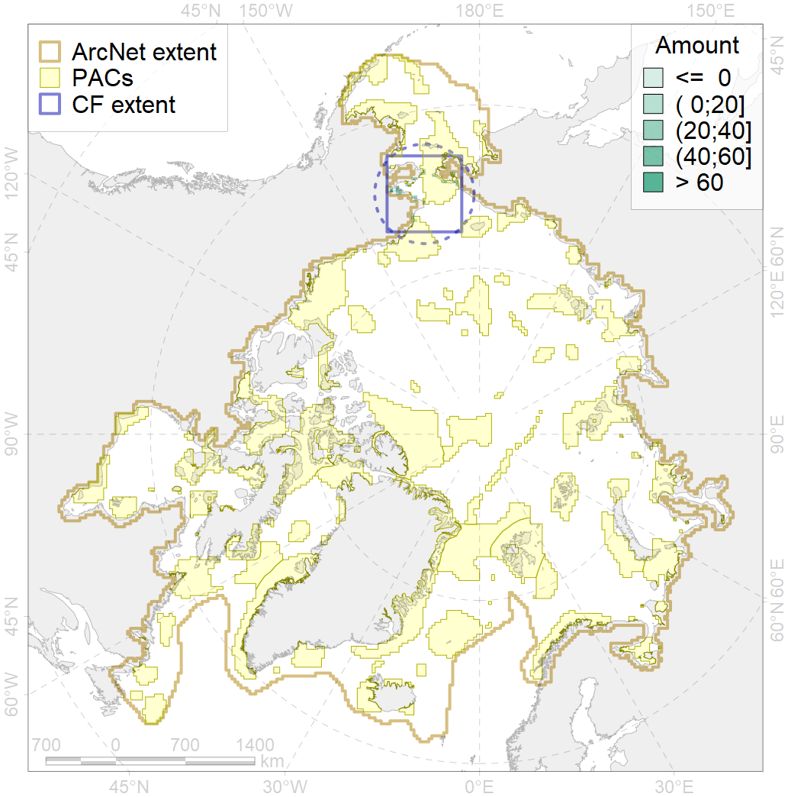
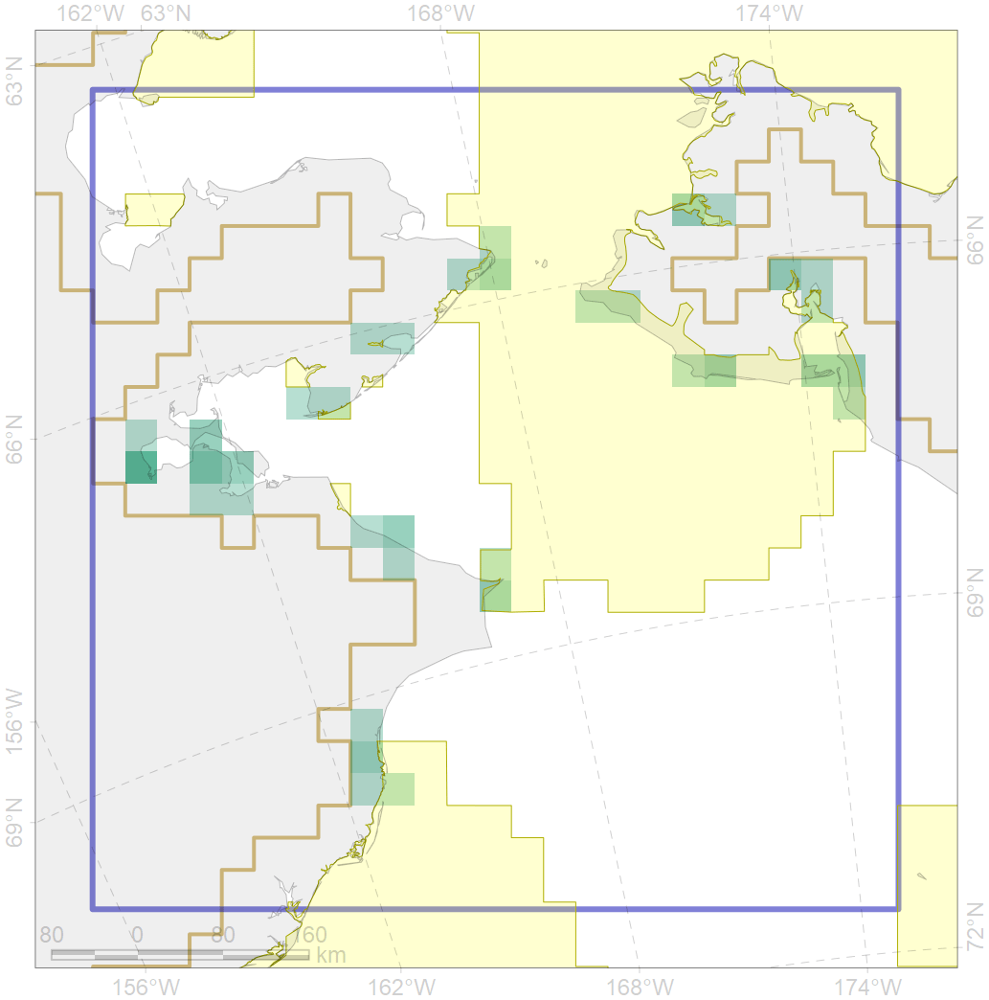

8029

| CF ID | 8029 |
| CF Name | Salt marshes of the Chukchi Sea LME |
| Time Period | 2014-2018 |
| Source(s) | Map prepared by F. Romanenko for PAMPAN specifically |
| Seasonality | June-September |
| Depth Horizon | 0 |
| Methodology | remote sensing, field data |
| Author Name | F. Romanenko |
| Notes | |
| Conservation Target Set in the Scenario | 0.3 |
| Conservation Target Achieved in the Scenario | 0.399 (Scenario: 132.9%) |
| PAC ID | Proportion in the PAC | Contribution to ArcNet Target Achievement | PAC’s Contribution to the Achieved Target |
|---|---|---|---|
| 5 | 41.6% | 112.2% | 84.4% |
| 6 | 3.5% | 11.8% | 8.9% |
| 60 | 7.8% | 4.9% | 3.7% |
| inner | 52.9% | 128.9% | 97.0% |
| outer | 47.1% | 4.0% | 3.0% |